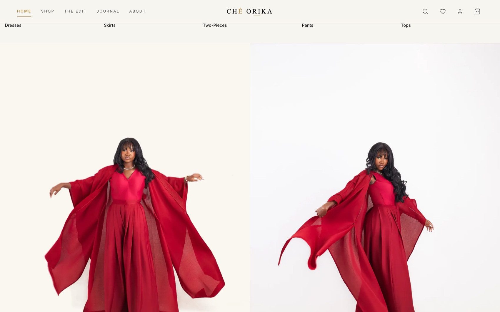

Cherechi Orika
I combine product thinking with AI-native execution to validate ideas fast and ship real software. Five plus years across HealthTech, TalentTech, and SaaS, and a growing shelf of products I have built end to end.
About
I am a Product Manager with five plus years of experience building enterprise SaaS, B2B platforms, marketplace products, and AI-enabled software across HealthTech, TalentTech, and SaaS.
Outside of my full-time roles, I build products myself using AI. Rather than using AI only for writing or brainstorming, I use it throughout the entire product lifecycle, from customer discovery and PRDs to engineering, debugging, deployment, analytics, and workflow automation. This portfolio showcases selected products I have built, and shows how I combine product thinking with AI-native execution to rapidly validate ideas and ship software.
How I build with AI
AI is embedded across my product development workflow, not bolted on at the end. Here is where it works, phase by phase, and the tools I reach for.
Product Discovery
- Customer interviews
- Competitor research
- Jobs-to-be-Done
- Opportunity mapping
- Product strategy
- Feature ideation
Product Planning
- PRDs
- User stories
- Acceptance criteria
- Roadmaps
- Prioritization
- Release planning
UX & Product Design
- User flows
- Information architecture
- UX reviews
- Design critiques
- Wireframes
Engineering
- System architecture
- Database modelling
- Feature implementation
- Debugging
- Refactoring
- Code reviews
- Testing
Launch
- Analytics
- CRM integration
- Event tracking
- Email automation
- Product rollouts
Continuous Improvement
- Analyse behaviour
- Identify bottlenecks
- Prioritize features
- Generate experiments
- Improve adoption
Selected work
Four products, built with AI as a partner across discovery, design, engineering, and launch. Click any project to read the full case study, with the architecture, product decisions, and screenshots behind it.

AI Operating System
AI as the operating system behind my businesses: a specialized agent for every function, connected by governed hand-offs and release gates.

AI Job Hunt Cockpit
A local-first assistant that discovers remote PM roles, scores fit, tailors resumes and cover letters, exports PDFs, and tracks everything.

The Pattern House
A garment studio's website rebuilt as a sales product: every inquiry lands qualified in a CRM pipeline, fully attributed, with automated follow-up.

Ché Orika
A multi-tenant fashion commerce platform with a governed operational backend, from premium storefront to admin dashboard, catalog, and RBAC.
What's next
Over the coming months I plan to expand these case studies with more architecture diagrams, product artefacts, metrics, and the decisions behind each build, as these products continue to evolve.